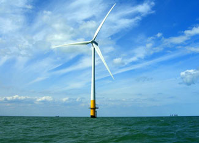

Excellent wind resources off the coast of the lower 48 states could generate enough power to exceed the electricity demand in the United States, according to U.S. Department of Energy’s National Renewable Energy Laboratory (NREL).
The NREL findings are included in a report released April 2 by the U.S. Department of the Interior, which is examining the potential for energy production on the outer continental shelf. The report notes that 28 of the lower 48 states have a coastal boundary (including the Great Lakes), and offshore wind turbines located in shallow waters (defined as less than 30 meters) could meet at least 20 percent of the electricity needs of nearly all those coastal states.
According to the NREL data, 263.8 gigawatts of wind power could be located in shallow offshore waters, while another 1,729.3 gigawatts of wind power could be located in deeper waters, where it is not currently feasible to harness the wind energy.
The Department of the Interior is currently holding a round of public meetings to examine the best way to develop the country’s offshore energy resources, including oil and natural gas.
Meanwhile, a new contender has entered the race to develop the first offshore wind power facility in the United States. Delsea Energy is planning to install 100 wind turbines or more in the shallow waters of the upper Delaware Bay, off the coast of New Jersey.
The company announced March 23 that it has filed initial permit applications with the New Jersey Department of Environmental Protection and the U.S. Army Corps of Engineers to install four data collection and monitoring stations in the Delaware Bay. If the results of that data collection project are positive, the company proposes to build a wind facility between one and two miles offshore. The company estimates that the wind project could generate enough power to supply 125,000 New Jersey households.
|
 PHAULT/FLICKR An offshore wind turbine in the Thames estuary off the east coast of England. Tapping offshore wind energy in shallow waters along U.S. coasts could generate 263.8 gigawatts of wind power, a new report says. |
|
|